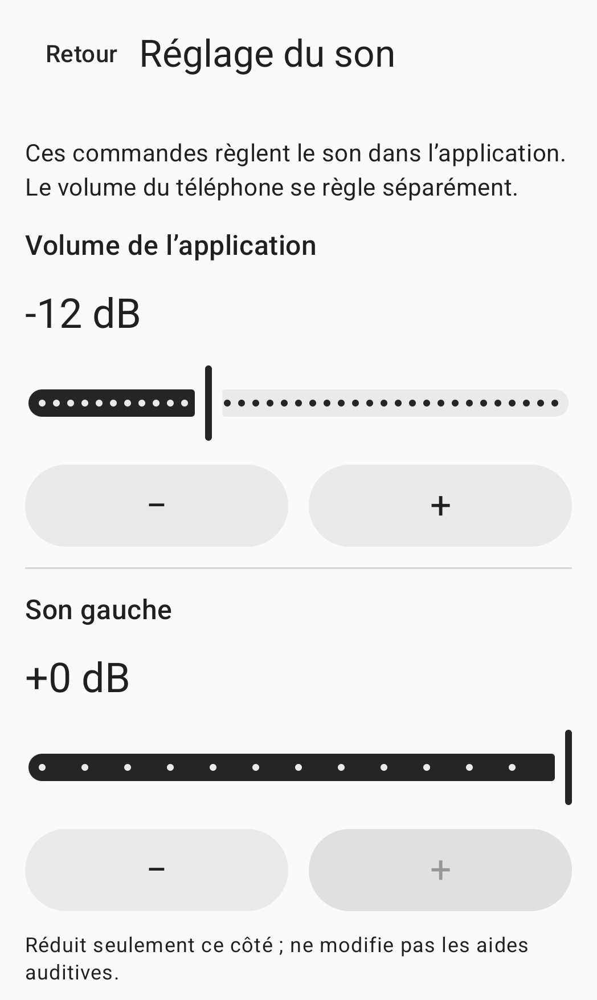

Réglage manuel des sons ambiants
Les sons ambiants,réglez-les vous-même.
Le son du microphone du téléphone,dans le casque ou les écouteurs de votre choix.Réglez le niveau, chaque côté et la tonalité.
Voir le mode d’emploiPas encore disponible au public.

Mode d’emploi
Connectez, réglez, puis démarrez.
Connecter
Connectez un casque ou des écouteurs à ce téléphone, puis choisissez la sortie dans l’app. Le mode filaire ou USB est utilisé par défaut. Pour le Bluetooth, activez le mode expérimental et sélectionnez vous-même la sortie connectée.
Régler
Réglez le niveau de l’app, chaque côté et la tonalité. Le volume multimédia du téléphone se règle séparément. Mettez votre casque ou vos écouteurs et préparez-vous à faible volume.
Démarrer
Autorisez l’accès au microphone, lisez l’avis de session, puis appuyez sur le bouton de consentement et de démarrage. L’autorisation seule n’active pas le microphone. Arrêtez la session depuis l’app ou sa notification.
Réglages audio
Choisissez vous-même vos réglages.
Les réglages de l’app et le volume multimédia du téléphone sont indépendants.
Niveau de l’app
Réglez dans l’app le niveau transmis au casque ou aux écouteurs choisis. Vérifiez aussi le volume multimédia du téléphone.
Gauche et droite
Réduisez chaque côté séparément. Ces commandes ne modifient pas les réglages propres au casque, aux écouteurs ou à un appareil auditif.
Tonalité
Réglez la tonalité manuellement. L’app n’effectue pas de compensation automatique à partir d’un test auditif.
L’image ci-dessus est un extrait de l’écran réel des réglages audio. Les commandes du côté droit et de la tonalité ne sont pas visibles dans ce recadrage.
Questions fréquentes
Avant de commencer
Puis-je utiliser un casque ou des écouteurs Bluetooth ?
Le Bluetooth est expérimental. Connectez votre casque ou vos écouteurs à ce téléphone, activez le mode expérimental et choisissez vous-même la sortie. Le délai et la qualité audio dépendent du téléphone et du casque ou des écouteurs.
La reconnexion relance-t-elle la session ?
Non. La perte du routage audio, de la priorité audio ou de l’autorisation du microphone met fin à la session. Reconnecter le casque ou rouvrir l’app ne la relance pas. Démarrez-la vous-même lorsque vous êtes prêt.
Que faire si mon casque ou mes écouteurs ne figurent pas dans la liste ?
Vérifiez la connexion audio multimédia Bluetooth de ce téléphone et actualisez la liste des sorties. La page d’assistance fournit plus de détails.
Comment supprimer les enregistrements ou les données de l’app ?
L’app ne crée pas de fichiers d’enregistrement du microphone. Consultez le guide des données locales pour supprimer les réglages audio, l’historique des demandes d’autorisation ou le compte rendu facultatif du dernier essai.
À lire avant utilisation.
Pour les adultes de 18 ans et plus ayant une audition normale, HearAssist est un outil de réglage manuel des sons ambiants. Il n’est pas destiné à compenser une perte auditive, remplacer un appareil auditif, tester l’audition, établir un diagnostic ou traiter une maladie.
La clarté de la parole, la latence réelle et la sécurité acoustique n’ont pas été validées. La suppression totale du bruit et une latence nulle ne sont pas garanties.
L’app n’est pas encore proposée au public dans les boutiques d’applications. Ce site fournit des informations sur le produit et une assistance.